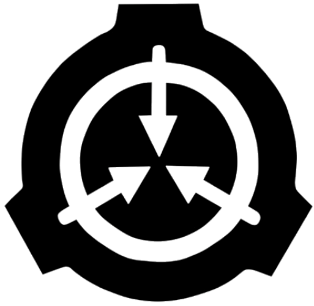

Description


Mulhausen Report docid:00.023.603
The following is a brief report detailing the discovery of SCP-002
Subject was discovered in a small crater in northern Portugal where it struck the Earth from orbit. Encased in a shell of thick rock, the fleshy exterior of the object was exposed by the impact. A native farmer happened upon the site and reported his findings to the village elder. Subject gained SCP attention when a Level 4 agent posted in the area detected a small radioactive anomaly generated by the object.
A collection squad of SCP security personnel led by General Mulhausen was immediately dispatched to the area where they quickly secured the subject in a large container and performed initial testing with subjects recruited from the nearby village. Three men individually sent into the structure subsequently disappeared. Upon discovering this deadly property of the subject, General Mulhausen issued a Level 4a Termination Order of any witnesses (roughly 1/3 of the village) to ensure no outside knowledge of the object and initiated its transport to SCP facility [DATA EXPUNGED].
During preparation for transport, four SCP security personnel were inexplicably drawn inside the object where they too immediately disappeared. Following inspection, it appeared as if the object had "grown" several new furnishings and was beginning to look like the interior of an apartment room. General Mulhausen immediately ordered the requisition of several Class III HAZMAT suits for the remaining security team members, who proceeded to lift the container onto a waiting freight ship for transport to the SCP containment facility.
[DATA EXPUNGED]
[DATA EXPUNGED]
Following the termination of General Mulhausen, SCP-002 was re-secured by SCP staff and brought into special containment in [CLASSIFIED], where it currently resides. Staff with clearance below Level 3 have been denied access to the SCP-002 container without prior approval of at least two Level 4 staff after the Mulhausen incident.